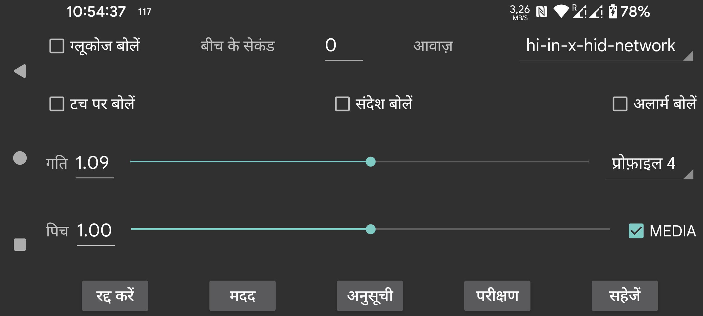

ar be de es fr hi nl pl ru tr uk uz zh en
ग्लूकोज मान आते ही उन्हें बोलता है।
बीच के सेकंड: निर्दिष्ट करता है कि Juggluco को अगला ग्लूकोज मान बोलने से पहले कितने सेकंड प्रतीक्षा करनी चाहिए। ग्लूकोज मान आते ही हमेशा तुरंत बोले जाते हैं। जब एक बड़ा मान निर्दिष्ट किया जाता है, तो Juggluco उन ग्लूकोज मानों को छोड़ देगा जो इस समय अवधि बीतने से पहले आते हैं।
आवाज़: संभावित वक्ताओं की सूची में से एक वक्ता चुनता है।
गति: एक उच्च संख्या का मतलब तेज़ बोलना है।
पिच: एक उच्च संख्या का मतलब उच्च पिच है।
परीक्षण: अंतिम ग्लूकोज मान बोलता है।
कुछ फोन पर टेक्स्ट-टू-स्पीच के लिए Android सेटिंग्स को इसके काम करने के लिए बदलना होगा। कभी-कभी एक भाषा का डेटा इंस्टॉल करना होगा या कॉन्फ़िगरेशन बदलना होगा। Samsung फोन पर विभिन्न आवाज़ों में से चुनने के लिए "Samsung text-to-speech engine" के बजाय "Google text-to-speech" सेट करना होगा। ये विकल्प Android सेटिंग्स में text-to-speech खोजकर या Language and input (->Advanced)->Text-to-Speech पर जाकर पाए जा सकते हैं। यहाँ आप "Speech Services by Google" चुन सकते हैं और वॉइस डेटा इंस्टॉल कर सकते हैं। अन्य फोन में यह System settings->Accessibility->Vision->Text-to-Speech settings के तहत है।
जब टच पर बोलें चालू होता है, तो कुछ स्थानों पर छूने से आवाज़ उत्पन्न होती है:
वर्तमान ग्लूकोज को छूना;
ग्राफ़ के बिंदुओं और स्कैन बिंदुओं को छूना;
मात्राओं को छूना;
जब ऊपरी बाएं और दाएं कोनों को छुआ जाता है, तो ग्राफ़ के उस बिंदु की तारीख बोली जाती है;
किसी मेन्यू आइटम को लंबा दबाना;
मात्राओं की सूची में किसी मात्रा को लंबा दबाना (बायां मध्य मेन्यू->सूची)।
टेक्स्ट संदेश पढ़ता है, जो स्क्रीन पर अस्थायी रूप से दिखाई देते हैं, और स्कैनिंग का परिणाम (त्रुटि संदेश और ग्लूकोज मान)।
कम और अधिक ग्लूकोज अलार्म के दौरान ग्लूकोज स्तर बोलता है। इसे अलार्म के आरंभ और जिस क्षण अलार्म रोका जाता है दोनों पर पढ़ा जाता है।
चुनें कि कौन सी प्रोफ़ाइल सक्रिय है। डिफ़ॉल्ट डिफ़ॉल्ट प्रोफ़ाइल है। बायां मेन्यू → सेटिंग्स → अलार्म और बोलें में सभी सेटिंग्स सक्रिय प्रोफ़ाइल के लिए विशिष्ट हैं।
आप Juggluco को दिन के एक निश्चित समय पर एक प्रोफ़ाइल सक्रिय करने के लिए कॉन्फ़िगर कर सकते हैं।
आप Android सेटिंग्स में sound के तहत बोलने की ध्वनि के वॉल्यूम को बढ़ा या घटा सकते हैं। यदि MEDIA बंद है, मैं इसे अपने फोन पर Notification ध्वनि लीवर के साथ कर सकता हूँ, अपनी WearOS घड़ी पर System ध्वनि लीवर के साथ। जब “Do not disturb” चालू होता है तो इसे सुनाई नहीं देना चाहिए। जब MEDIA सेट होता है, तो media वॉल्यूम लीवर का उपयोग होता है और अधिकांश फोन पर यह “Do not disturb” के दौरान सुनाई देगा
अलार्म बोलें अलग है। जब “अलार्म ही अलार्म है” चालू होता है तो अलार्म “Alarms” श्रेणी के साथ बोले जाते हैं। मेरे फोन पर वॉल्यूम अलार्म-लीवर के साथ नियंत्रित होता है, मेरी घड़ी पर Notification लीवर के साथ।